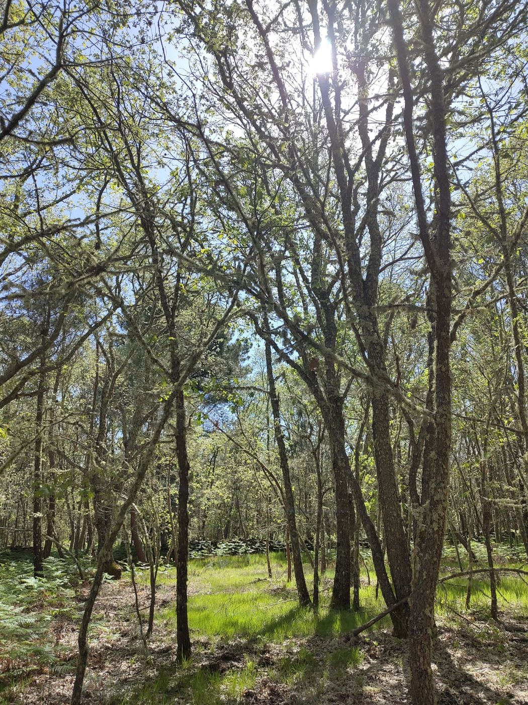
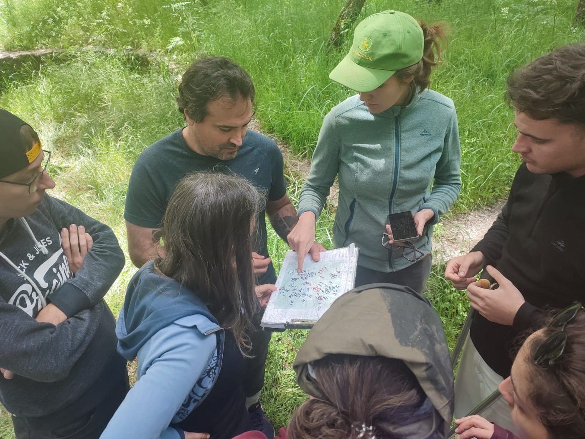
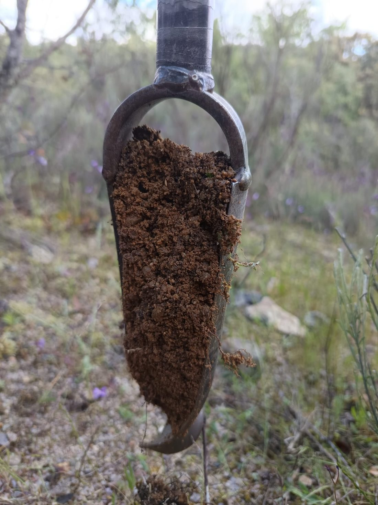
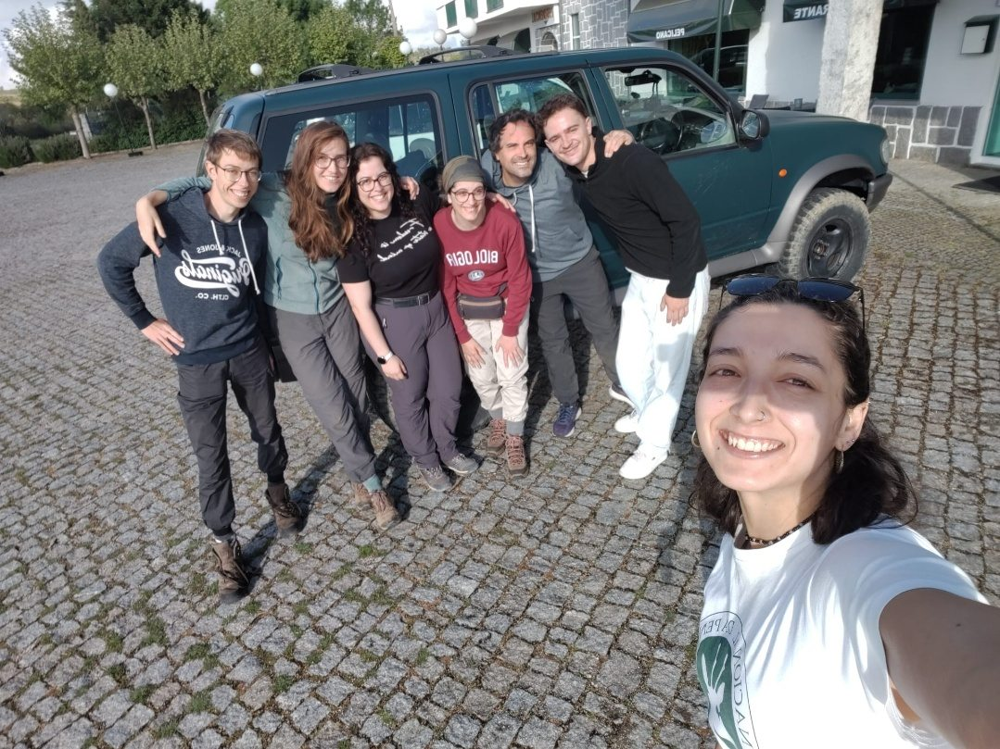

Putting Soil Health Indicators to the Test: A Europe-Wide Sampling Campaign
How do you know whether a soil health indicator actually works, across a Dutch peat meadow, a Portuguese pine forest, a Finnish bog, and an Oslo city park, all at once? That is the question driving Task 4.4 of BENCHMARKS, the project's large-scale effort to validate the soil health indicators proposed by the EU Soil Health & Food Mission, as well as additional metrics. Since the campaign began in 2024, it has grown into one of the most extensive soil sampling networks in the project — run across 29 Case Study Sites spanning agricultural, forest and urban land uses across Europe, with around 20 partner institutions contributing to fieldwork, laboratory analysis, or both.
The sampling has unfolded in three distinct phases, each building on the last.
2024: building the baseline
The first sampling year established the project's core network: 1,149 sampling points across agricultural sites and 696 across forest sites, each yielding multiple soil samples. This baseline campaign alone generated close to 29,000 individual lab measurements — spanning biological indicators (microbiome composition, nematodes, earthworms, microarthropods; ~4,900 measurements), chemical indicators (pH, organic carbon, nitrogen, cation exchange capacity and more; ~21,000), physical indicators (texture, bulk density, aggregate stability; 2,000+) and contaminant indicators (pesticides, POPs, plastics; ~900). It was also the year Lynx Land in Portugal (CSS8) — our featured example below — had its first samples taken.
2025: repeating to capture change, and going urban
Two campaigns followed in 2025. First, a repeat of the experimental network to capture inter-annual variability: 145 points across long-term agricultural trials (494 bulk soil samples) and 57 points across four forest sites (126 samples). Second, the project's first urban fragmentation campaign: soils sampled across five European cities — Nancy, Oslo, Brno, Naples and Amsterdam — along a gradient of green-space fragmentation, producing 208 bulk soil samples.
2026: scaling up to the landscape
This year marks the project's most ambitious sampling design yet: landscape-scale sampling, designed to capture how soil health varies continuously across a landscape rather than at isolated points. Four case studies were selected, each a different land use under environmental pressure:
- CSS2, Netherlands — agricultural peat meadows, drained and non-drained
- CSS8, Portugal (Lynx Land) — a natural oak forest and managed pine forest catena shaped by fire risk and water shortage
- CSS11, Finland — forest systems across a drained/non-drained peat gradient
- CSS16, Spain (La Rogativa & La Junquera) — oak forest and almond orchards on warm, dry, steep slopes
Each landscape is sampled at roughly 100 locations, selected using a stratified random design based on k-means clustering of satellite, elevation and soil-property data — so that sampling effort is concentrated where the landscape is genuinely most variable. Altogether the landscape campaign is expected to add around 400 bulk soil samples to the network.

Case study: Lynx Land, Portugal
Lynx Land illustrates the full arc of this effort. First sampled in 2024 as part of the local variance network, it returned to the field in spring 2026 for the landscape-scale campaign, scaling from a single site to a full catchment. The EnGeL-UC team completed around 100 sampling locations across the Sabugal and Penamacor region, collecting soil for chemical and physical analyses along with dedicated samples for mesofauna and eDNA-based biodiversity assessments.

The field team checking sampling locations against the stratified design map.
At each point, a soil corer was used to collect samples for the full suite of chemical, physical and biological indicators, with the same harmonised protocol applied at every BENCHMARKS case study.

A soil core ready for processing.
The field phase from our side is now complete — no more samples to collect, only thousands left to process! At EnGeL-UC, soil mesofauna cores are moving through extraction, sequencing and biodiversity assessment, with results feeding directly into the project's wider indicator-validation dataset.

The EnGeL-UC field team at the end of the Lynx Land landscape sampling campaign.
Where things stand
The 2024 baseline and 2025 campaigns (experimental and urban sites) are complete. Data from 2024 has been integrated into the project database (Open ADOM), with 2025 data to follow. The 2026 landscape campaign is the current focus: fieldwork in Lynx Land (Portugal) and Spain wrapped up in spring 2026, while sampling in the Netherlands and Finland is underway. Laboratory results from the landscape campaign are expected in early 2027.
What's next
Once all four landscape sites are sampled, the focus shifts to the labs: processing the chemical, physical and biodiversity datasets and integrating them into the project's central database. Together with the 2024 and 2025 data, these results will feed directly into the next stage — setting realistic, regional and land-use-specific thresholds for soil health indicators, and supporting the modelling work elsewhere in BENCHMARKS. A first scientific paper synthesising the multi-scale indicator dataset is already in preparation.
This three-year, Europe-wide effort — from Dutch peat meadows to Portuguese pine forests — is what allows BENCHMARKS to say, with confidence, which soil health indicators actually hold up in the field.